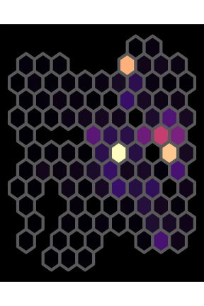
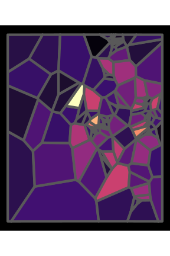
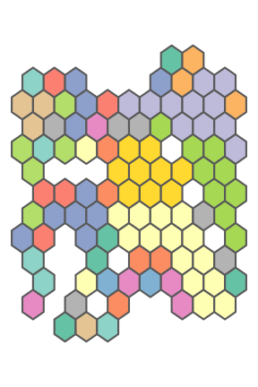
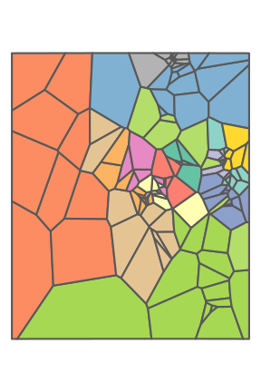
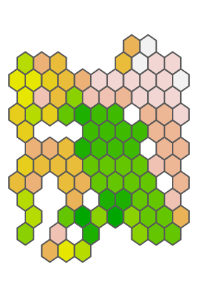
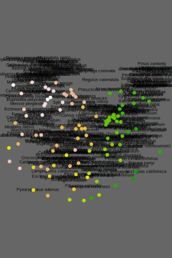
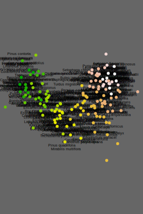

library(tidyverse)
library(sf)
library(vegan)
library(RColorBrewer)
knitr::opts_chunk$set(comment="", cache=T, warning = F, message = F, fig.path = "images/",
dev="svglite", dev.args=list(fix_text_size=FALSE),
fig.height=6, fig.width=4)Load GBIF data
#San Jacinto Mountains research-grade iNaturalist observations
box <- st_as_sfc("POLYGON((-117 33.5,-116.5 33.5,-116.5 34,-117 34,-117 33.5))") %>% st_set_crs("WGS84")
#GBIF.org (19 September 2024) GBIF Occurrence Download https://doi.org/10.15468/dl.25fxq8
dat.all <- read_tsv("data/0022443-240906103802322.csv.gz")
rare_cutoff <- 42 #drop rare species
dat.common <- dat.all %>%
filter(coordinateUncertaintyInMeters < 1000) %>%
group_by(species) %>% filter(n()>rare_cutoff) %>% drop_na(species) %>%
mutate(species=factor(species), species_int = as.integer(species)) %>% as.data.frame()
dat.points <- dat.common %>% st_as_sf(coords = c("decimalLongitude", "decimalLatitude"), crs = "WGS84")
ggplot(dat.points, aes(color=order)) + geom_sf() + theme_void() + guides(color="none") +
theme(panel.background = element_rect(fill="black"))
group_by_cell <- function(points, grid, min_obs=0) {
#assign points to cells
dat.grid.cells <- st_intersects(grid, points)
grid$n_obs <- lengths(dat.grid.cells) #count points in each cell
#drop cells with few observations
cells.full <- which(grid$n_obs > min_obs)
grid.full <- grid[cells.full,]
#tally number of each species in each cell
dat.grid <- t(sapply(dat.grid.cells, function(x) table(points$species[x])))
rownames(dat.grid) <- grid$grid_id
dat.grid.full <- dat.grid[cells.full,]
list(data = dat.grid.full, grid = grid.full)
}Draw hexagonal grid
#make hexagonal grid
hex_dim <- 10 #number of hexagons on each side
hex.sfc <- dat.points %>% st_make_grid(n=c(hex_dim, hex_dim), square = F)
hex <- hex.sfc %>% st_sf() %>% mutate(grid_id = 1:length(lengths(hex.sfc)))
hex.obj <- group_by_cell(dat.points, hex, min_obs=10)
dat.hex <- hex.obj$data
hex.full <- hex.obj$grid
ggplot(hex.full, aes(fill=n_obs)) + geom_sf(linewidth=2) +
theme_void() + scale_fill_viridis_c(option="magma", guide="none") +
theme(panel.background = element_rect(fill="black"))
Draw Voronoi triangles
#get a sample of points as seeds
n_seeds <- 144
set.seed(9)
dat.sample <- sample_n(dat.points, n_seeds)
tri <- dat.sample %>% st_geometry() %>% do.call(c, .) %>% st_voronoi() %>%
st_collection_extract() %>% st_set_crs("WGS84") %>% st_sf() %>%
mutate(grid_id = 1:nrow(.)) %>%
st_intersection(box)
tri.obj <- group_by_cell(dat.points, tri, min_obs=10)
dat.tri <- tri.obj$data
tri.full <- tri.obj$grid
ggplot(tri.full, aes(fill=n_obs)) + geom_sf(linewidth=2) +
theme_void() + scale_fill_viridis_c(option="magma", guide="none") +
theme(panel.background = element_rect(fill="black"))
k-Means clustering
#assign clusters with k-means
n_clusters <- 15
pal <- c(brewer.pal(8, "Set2"), brewer.pal(12, "Set3"))[1:n_clusters] %>% set_names(1:n_clusters)
set.seed(1)
hex.km <- dat.hex %>% decostand("hellinger") %>% kmeans(n_clusters)
ggplot(hex.full, aes(fill=factor(hex.km$cluster))) + geom_sf(linewidth=1) +
theme_void() + scale_fill_manual(values=pal, guide="none")
set.seed(2)
tri.km <- dat.tri %>% decostand("hellinger") %>% kmeans(n_clusters)
ggplot(tri.full, aes(fill=factor(tri.km$cluster))) + geom_sf(linewidth=1) +
theme_void() + scale_fill_manual(values=pal, guide="none")
Arrange clusters in gradient
hex.km.nmds <- metaMDS(hex.km$centers, k=1, trace=F)
hex.full$cluster <- factor(hex.km$cluster, levels=order(-t(hex.km.nmds$points)))
ggplot(hex.full, aes(fill=as.integer(cluster))) + geom_sf(linewidth=1) +
theme_void() + scale_fill_gradientn(colours = terrain.colors(n_clusters), guide = "none")
tri.km.nmds <- metaMDS(tri.km$centers, k=1, trace=F)
tri.full$cluster <- factor(tri.km$cluster, levels=order(t(tri.km.nmds$points)))
ggplot(tri.full, aes(fill=as.integer(cluster))) + geom_sf(linewidth=1) +
theme_void() + scale_fill_gradientn(colours = terrain.colors(n_clusters), guide = "none")
NMDS ordination
plot_nmds <- function(data, grid) {
nmds <- metaMDS(data, trace=F)
par(bg="grey40", mar=c(0,0,0,0))
plot(nmds, type="n", axes=F, ann=F)
text(nmds, display="species", cex=0.6)
points(nmds, display="sites", col=terrain.colors(n_clusters)[grid$cluster], pch=19)
par(bg="white")
}
plot_nmds(dat.hex, hex.full)
plot_nmds(dat.tri, tri.full)